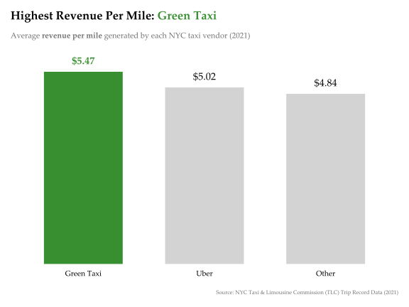

Show Code
# aggreagate and summarise data
metrics_by_vendor <- TAXI_TRIPS_NYC %>%
group_by(vendorid) %>%
summarise(
# aggregate key metrics
total_revenue = sum(total_amount),
total_trips = n(),
total_distance = sum(trip_distance),
total_mins = sum(duration_mins)
) %>%
mutate(
revenue_per_trip = total_revenue / total_trips,
revenue_per_mile = total_revenue / total_distance,
revenue_per_min = total_revenue / total_mins
) %>%
arrange(desc(revenue_per_mile))
# bar plot
# extract vendor with highest revenue_per_mile
top_vendor <- metrics_by_vendor %>%
slice_max(order_by = revenue_per_mile, n = 1) %>%
pull(vendorid) %>%
as.character()
# assign fill colours for bars
colours <- paletteer_d("futurevisions::hd")
highlight_colour <- COLOUR_GREEN
metrics_by_vendor <- metrics_by_vendor %>%
mutate(bar_colour = if_else(vendorid == top_vendor, highlight_colour, "lightgrey"))
# plot: bar chart
ggplot(
metrics_by_vendor,
aes(
x = fct_reorder(
vendorid,
revenue_per_mile,
.desc = TRUE
),
y = revenue_per_mile
)
) +
# bar chart + highlight colouring
geom_bar(
stat = "identity",
width = .65,
aes(fill = vendorid == top_vendor)
) +
scale_fill_manual(
values = c(
"TRUE" = highlight_colour,
"FALSE" = "lightgrey"
)
) +
# text labels for revenue_per_mile
geom_text(
aes(
label = scales::dollar(revenue_per_mile),
colour = vendorid == top_vendor,
fontface = ifelse(vendorid == top_vendor, "bold", "plain")
),
size = 5,
vjust = -1
) +
scale_colour_manual(
values = c(
"TRUE" = highlight_colour,
"FALSE" = "black"
)
) +
# prevent clipping of any labels
coord_cartesian(clip = "off") +
# set text for: title, subtitle, caption
labs(
title = str_c(
"<b>Highest Revenue Per Mile: ",
"<span style='color:", highlight_colour,
"; font-weight:bold;'>", top_vendor, "</span>"
),
subtitle = "Average <b>revenue per mile</b> generated by each NYC taxi vendor (2021)",
caption = FIG_CAPTION,
x = NULL, y = NULL
) +
# apply base theme
theme_minimal(
base_family = BASE_FAMILY,
base_size = BASE_SIZE
) +
# finetune theme elements
theme(
# title, subtitle, caption
plot.title = element_markdown(
size = rel(1.5),
margin = margin(b = 12)
),
plot.subtitle = element_markdown(
colour = "#6e6e6e",
size = rel(1),
margin = margin(b = 30),
),
plot.caption = element_text(
colour = "#6e6e6e",
size = rel(0.7),
hjust = 1
),
plot.title.position = "plot",
# axes, grid, legend, margin
panel.grid.major = element_blank(),
panel.grid.minor = element_blank(),
axis.text.y = element_blank(),
axis.text.x = element_text(
vjust = 3.5,
colour = "black",
size = rel(1.2)
),
legend.position = "none",
plot.margin = margin(15, 15, 15, 15)
)